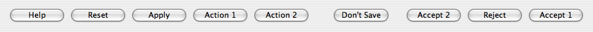
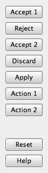
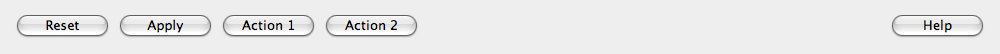
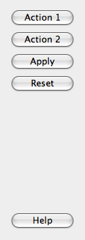

QDialogButtonBox Class
The QDialogButtonBox class is a widget that presents buttons in a layout that is appropriate to the current widget style. More...
| Header: | #include <QDialogButtonBox> |
| CMake: | find_package(Qt6 REQUIRED COMPONENTS Widgets) target_link_libraries(mytarget PRIVATE Qt6::Widgets) |
| qmake: | QT += widgets |
| Inherits: | QWidget |
Public Types
| enum | ButtonLayout { WinLayout, MacLayout, KdeLayout, GnomeLayout, AndroidLayout } |
| enum | ButtonRole { InvalidRole, AcceptRole, RejectRole, DestructiveRole, ActionRole, …, ResetRole } |
| enum | StandardButton { Ok, Open, Save, Cancel, Close, …, NoButton } |
| flags | StandardButtons |
Properties
- centerButtons : bool
- orientation : Qt::Orientation
- standardButtons : StandardButtons
Public Functions
| QDialogButtonBox(QWidget *parent = nullptr) | |
| QDialogButtonBox(Qt::Orientation orientation, QWidget *parent = nullptr) | |
| QDialogButtonBox(QDialogButtonBox::StandardButtons buttons, QWidget *parent = nullptr) | |
| QDialogButtonBox(QDialogButtonBox::StandardButtons buttons, Qt::Orientation orientation, QWidget *parent = nullptr) | |
| virtual | ~QDialogButtonBox() |
| void | addButton(QAbstractButton *button, QDialogButtonBox::ButtonRole role) |
| QPushButton * | addButton(const QString &text, QDialogButtonBox::ButtonRole role) |
| QPushButton * | addButton(QDialogButtonBox::StandardButton button) |
| QPushButton * | button(QDialogButtonBox::StandardButton which) const |
| QDialogButtonBox::ButtonRole | buttonRole(QAbstractButton *button) const |
| QList<QAbstractButton *> | buttons() const |
| bool | centerButtons() const |
| void | clear() |
| Qt::Orientation | orientation() const |
| void | removeButton(QAbstractButton *button) |
| void | setCenterButtons(bool center) |
| void | setOrientation(Qt::Orientation orientation) |
| void | setStandardButtons(QDialogButtonBox::StandardButtons buttons) |
| QDialogButtonBox::StandardButton | standardButton(QAbstractButton *button) const |
| QDialogButtonBox::StandardButtons | standardButtons() const |
Signals
| void | accepted() |
| void | clicked(QAbstractButton *button) |
| void | helpRequested() |
| void | rejected() |
Reimplemented Protected Functions
| virtual void | changeEvent(QEvent *event) override |
| virtual bool | event(QEvent *event) override |
Detailed Description
Dialogs and message boxes typically present buttons in a layout that conforms to the interface guidelines for that platform. Invariably, different platforms have different layouts for their dialogs. QDialogButtonBox allows a developer to add buttons to it and will automatically use the appropriate layout for the user's desktop environment.
Most buttons for a dialog follow certain roles. Such roles include:
- Accepting or rejecting the dialog.
- Asking for help.
- Performing actions on the dialog itself (such as resetting fields or applying changes).
There can also be alternate ways of dismissing the dialog which may cause destructive results.
Most dialogs have buttons that can almost be considered standard (e.g. OK and Cancel buttons). It is sometimes convenient to create these buttons in a standard way.
There are a couple ways of using QDialogButtonBox. One ways is to create the buttons (or button texts) yourself and add them to the button box, specifying their role.
QDialogButtonBox *buttonBox = new QDialogButtonBox(Qt::Vertical);
buttonBox->addButton(findButton, QDialogButtonBox::ActionRole);
buttonBox->addButton(moreButton, QDialogButtonBox::ActionRole);
Alternatively, QDialogButtonBox provides several standard buttons (e.g. OK, Cancel, Save) that you can use. They exist as flags so you can OR them together in the constructor.
buttonBox = new QDialogButtonBox(QDialogButtonBox::Ok
| QDialogButtonBox::Cancel);
connect(buttonBox, &QDialogButtonBox::accepted, this, &QDialog::accept);
connect(buttonBox, &QDialogButtonBox::rejected, this, &QDialog::reject);
You can mix and match normal buttons and standard buttons.
Currently the buttons are laid out in the following way if the button box is horizontal:
 GnomeLayout Horizontal GnomeLayout Horizontal | Button box laid out in horizontal GnomeLayout |
 KdeLayout Horizontal KdeLayout Horizontal | Button box laid out in horizontal KdeLayout |
|  MacLayout Horizontal | Button box laid out in horizontal MacLayout |
 WinLayout Horizontal WinLayout Horizontal | Button box laid out in horizontal WinLayout |
The buttons are laid out the following way if the button box is vertical:
| GnomeLayout | KdeLayout | MacLayout | WinLayout |
|  GnomeLayout Vertical |  KdeLayout Vertical KdeLayout Vertical |  MacLayout Vertical MacLayout Vertical |  WinLayout Vertical WinLayout Vertical |
Additionally, button boxes that contain only buttons with ActionRole or HelpRole can be considered modeless and have an alternate look on macOS:
| modeless horizontal MacLayout |  Screenshot of modeless horizontal MacLayout |
| modeless vertical MacLayout |  Screenshot of modeless vertical MacLayout |
When a button is clicked in the button box, the clicked() signal is emitted for the actual button is that is pressed. For convenience, if the button has an AcceptRole, RejectRole, or HelpRole, the accepted(), rejected(), or helpRequested() signals are emitted respectively.
If you want a specific button to be default you need to call QPushButton::setDefault() on it yourself. However, if there is no default button set and to preserve which button is the default button across platforms when using the QPushButton::autoDefault property, the first push button with the accept role is made the default button when the QDialogButtonBox is shown,
See also QMessageBox, QPushButton, and QDialog.
Member Type Documentation
enum QDialogButtonBox::ButtonLayout
This enum describes the layout policy to be used when arranging the buttons contained in the button box.
| Constant | Value | Description |
|---|---|---|
QDialogButtonBox::WinLayout | 0 | Use a policy appropriate for applications on Windows. |
QDialogButtonBox::MacLayout | 1 | Use a policy appropriate for applications on macOS. |
QDialogButtonBox::KdeLayout | 2 | Use a policy appropriate for applications on KDE. |
QDialogButtonBox::GnomeLayout | 3 | Use a policy appropriate for applications on GNOME. |
QDialogButtonBox::AndroidLayout | 4 | Use a policy appropriate for applications on Android. This enum value was added in Qt 5.10. |
The button layout is specified by the current style. However, on the X11 platform, it may be influenced by the desktop environment.
enum QDialogButtonBox::ButtonRole
This enum describes the roles that can be used to describe buttons in the button box. Combinations of these roles are as flags used to describe different aspects of their behavior.
| Constant | Value | Description |
|---|---|---|
QDialogButtonBox::InvalidRole | -1 | The button is invalid. |
QDialogButtonBox::AcceptRole | 0 | Clicking the button causes the dialog to be accepted (e.g. OK). |
QDialogButtonBox::RejectRole | 1 | Clicking the button causes the dialog to be rejected (e.g. Cancel). |
QDialogButtonBox::DestructiveRole | 2 | Clicking the button causes a destructive change (e.g. for Discarding Changes) and closes the dialog. |
QDialogButtonBox::ActionRole | 3 | Clicking the button causes changes to the elements within the dialog. |
QDialogButtonBox::HelpRole | 4 | The button can be clicked to request help. |
QDialogButtonBox::YesRole | 5 | The button is a "Yes"-like button. |
QDialogButtonBox::NoRole | 6 | The button is a "No"-like button. |
QDialogButtonBox::ApplyRole | 8 | The button applies current changes. |
QDialogButtonBox::ResetRole | 7 | The button resets the dialog's fields to default values. |
See also StandardButton.
enum QDialogButtonBox::StandardButton
flags QDialogButtonBox::StandardButtons
These enums describe flags for standard buttons. Each button has a defined ButtonRole.
| Constant | Value | Description |
|---|---|---|
QDialogButtonBox::Ok | 0x00000400 | An "OK" button defined with the AcceptRole. |
QDialogButtonBox::Open | 0x00002000 | An "Open" button defined with the AcceptRole. |
QDialogButtonBox::Save | 0x00000800 | A "Save" button defined with the AcceptRole. |
QDialogButtonBox::Cancel | 0x00400000 | A "Cancel" button defined with the RejectRole. |
QDialogButtonBox::Close | 0x00200000 | A "Close" button defined with the RejectRole. |
QDialogButtonBox::Discard | 0x00800000 | A "Discard" or "Don't Save" button, depending on the platform, defined with the DestructiveRole. |
QDialogButtonBox::Apply | 0x02000000 | An "Apply" button defined with the ApplyRole. |
QDialogButtonBox::Reset | 0x04000000 | A "Reset" button defined with the ResetRole. |
QDialogButtonBox::RestoreDefaults | 0x08000000 | A "Restore Defaults" button defined with the ResetRole. |
QDialogButtonBox::Help | 0x01000000 | A "Help" button defined with the HelpRole. |
QDialogButtonBox::SaveAll | 0x00001000 | A "Save All" button defined with the AcceptRole. |
QDialogButtonBox::Yes | 0x00004000 | A "Yes" button defined with the YesRole. |
QDialogButtonBox::YesToAll | 0x00008000 | A "Yes to All" button defined with the YesRole. |
QDialogButtonBox::No | 0x00010000 | A "No" button defined with the NoRole. |
QDialogButtonBox::NoToAll | 0x00020000 | A "No to All" button defined with the NoRole. |
QDialogButtonBox::Abort | 0x00040000 | An "Abort" button defined with the RejectRole. |
QDialogButtonBox::Retry | 0x00080000 | A "Retry" button defined with the AcceptRole. |
QDialogButtonBox::Ignore | 0x00100000 | An "Ignore" button defined with the AcceptRole. |
QDialogButtonBox::NoButton | 0x00000000 | An invalid button. |
The StandardButtons type is a typedef for QFlags<StandardButton>. It stores an OR combination of StandardButton values.
See also ButtonRole and standardButtons.
Property Documentation
centerButtons : bool
This property holds whether the buttons in the button box are centered
By default, this property is false. This behavior is appropriate for most types of dialogs. A notable exception is message boxes on most platforms (e.g. Windows), where the button box is centered horizontally.
Access functions:
| bool | centerButtons() const |
| void | setCenterButtons(bool center) |
See also QMessageBox.
orientation : Qt::Orientation
This property holds the orientation of the button box
By default, the orientation is horizontal (i.e. the buttons are laid out side by side). The possible orientations are Qt::Horizontal and Qt::Vertical.
Access functions:
| Qt::Orientation | orientation() const |
| void | setOrientation(Qt::Orientation orientation) |
standardButtons : StandardButtons
collection of standard buttons in the button box
This property controls which standard buttons are used by the button box.
Access functions:
| QDialogButtonBox::StandardButtons | standardButtons() const |
| void | setStandardButtons(QDialogButtonBox::StandardButtons buttons) |
See also addButton().
Member Function Documentation
QDialogButtonBox::QDialogButtonBox(QWidget *parent = nullptr)
Constructs an empty, horizontal button box with the given parent.
See also orientation and addButton().
QDialogButtonBox::QDialogButtonBox(Qt::Orientation orientation, QWidget *parent = nullptr)
Constructs an empty button box with the given orientation and parent.
See also orientation and addButton().
[explicit] QDialogButtonBox::QDialogButtonBox(QDialogButtonBox::StandardButtons buttons, QWidget *parent = nullptr)
Constructs a horizontal button box with the given parent, containing the standard buttons specified by buttons.
See also orientation and addButton().
QDialogButtonBox::QDialogButtonBox(QDialogButtonBox::StandardButtons buttons, Qt::Orientation orientation, QWidget *parent = nullptr)
Constructs a button box with the given orientation and parent, containing the standard buttons specified by buttons.
See also orientation and addButton().
[virtual noexcept] QDialogButtonBox::~QDialogButtonBox()
Destroys the button box.
[signal] void QDialogButtonBox::accepted()
This signal is emitted when a button inside the button box is clicked, as long as it was defined with the AcceptRole or YesRole.
See also rejected(), clicked(), and helpRequested().
void QDialogButtonBox::addButton(QAbstractButton *button, QDialogButtonBox::ButtonRole role)
Adds the given button to the button box with the specified role. If the role is invalid, the button is not added.
If the button has already been added, it is removed and added again with the new role.
Note: The button box takes ownership of the button.
See also removeButton() and clear().
QPushButton *QDialogButtonBox::addButton(const QString &text, QDialogButtonBox::ButtonRole role)
Creates a push button with the given text, adds it to the button box for the specified role, and returns the corresponding push button. If role is invalid, no button is created, and zero is returned.
See also removeButton() and clear().
QPushButton *QDialogButtonBox::addButton(QDialogButtonBox::StandardButton button)
Adds a standard button to the button box if it is valid to do so, and returns a push button. If button is invalid, it is not added to the button box, and zero is returned.
See also removeButton() and clear().
QPushButton *QDialogButtonBox::button(QDialogButtonBox::StandardButton which) const
Returns the QPushButton corresponding to the standard button which, or nullptr if the standard button doesn't exist in this button box.
See also standardButton(), standardButtons(), and buttons().
QDialogButtonBox::ButtonRole QDialogButtonBox::buttonRole(QAbstractButton *button) const
Returns the button role for the specified button. This function returns InvalidRole if button is nullptr or has not been added to the button box.
See also buttons() and addButton().
QList<QAbstractButton *> QDialogButtonBox::buttons() const
Returns a list of all buttons that have been added to the button box.
See also buttonRole(), addButton(), and removeButton().
[override virtual protected] void QDialogButtonBox::changeEvent(QEvent *event)
Reimplements: QWidget::changeEvent(QEvent *event).
void QDialogButtonBox::clear()
Clears the button box, deleting all buttons within it.
See also removeButton() and addButton().
[signal] void QDialogButtonBox::clicked(QAbstractButton *button)
This signal is emitted when a button inside the button box is clicked. The specific button that was pressed is specified by button.
See also accepted(), rejected(), and helpRequested().
[override virtual protected] bool QDialogButtonBox::event(QEvent *event)
Reimplements: QWidget::event(QEvent *event).
[signal] void QDialogButtonBox::helpRequested()
This signal is emitted when a button inside the button box is clicked, as long as it was defined with the HelpRole.
See also accepted(), rejected(), and clicked().
[signal] void QDialogButtonBox::rejected()
This signal is emitted when a button inside the button box is clicked, as long as it was defined with the RejectRole or NoRole.
See also accepted(), helpRequested(), and clicked().
void QDialogButtonBox::removeButton(QAbstractButton *button)
Removes button from the button box without deleting it and sets its parent to zero.
See also clear(), buttons(), and addButton().
QDialogButtonBox::StandardButton QDialogButtonBox::standardButton(QAbstractButton *button) const
Returns the standard button enum value corresponding to the given button, or NoButton if the given button isn't a standard button.
See also button(), buttons(), and standardButtons().